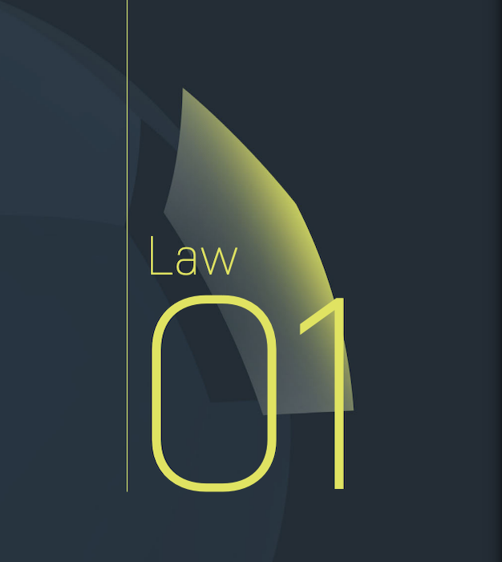

Law 1 - The Field of Play
- The colour of artificial surfaces must be green.
- The field of play must be rectangular.
- It must be marked with continuous lines which must not be dangerous.
- All lines must be of the same width, which must not be more than 12 cm (5 ins).